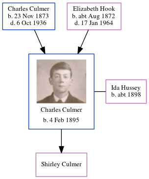

May Ellen Elizabeth Culmer cMay 1897 - c1897
[ Home ] | [ Calendar ] | [ Surnames Index ] | [ Errors ] | [ Family History ]The child of Charles Culmer (a fish carrier) and Elizabeth Hook, May Culmer, the second cousin once-removed on the mother's side of Nigel Horne, was born in Bromley, Kent, England c. May 18971.
She died c. Jul 1897.
Parents
- Charles James was born on 23 Nov 1873
- Elizabeth Sarah was born c. Aug 1872
Citations
- England & Wales births 1837-2006 - Findmypast
Media
England & Wales births 1837-2006 - BMD/B/1897/2/AZ/000136/237
Family Tree
Map
Generated by ged2site. Last updated on Jul 3, 2024
Known Issues
Death date (abt Jul 1897) has no citations
Date of death is known, but not place